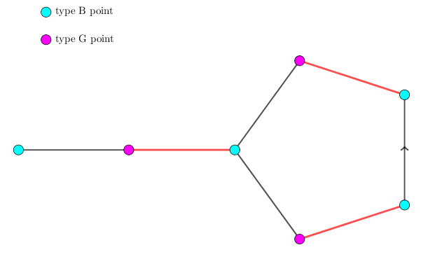

给定一张 $n$ 个点 $m$ 条边的无向简单图，求图的一个最大匹配。
第一行两个正整数 $n, m$ ($2 \leq n \leq 500; 1 \leq m \leq \dbinom n2$)，表示图的边数和点数。
接下来 $m$ 行，每行两个整数 $u, v$ ($1 \leq u, v \leq n; u \neq v$)，表示 $u$ 到 $v$ 之间有一条边相连，保证同一条边不会出现两次。
第一行一个整数，表示最大匹配的大小。
接下来一行 $n$ 个整数，描述这个最大匹配。第 $v$ 个整数表示点 $v$ 在最大匹配中的匹配点，如果不存在输出 $0$。
先来回忆一下二分图最大匹配时的几个概念：
交错路：对路径 $v_1 \xrightarrow {e_1} v_2 \xrightarrow {e_2} \cdots \xrightarrow {e_{n-1}} v_n$，如果匹配边和未匹配边交替出现，且当 $e_1$ 为非匹配边时 $v_1$ 为非匹配点，当 $e_{n-1}$ 为非匹配边时 $v_n$ 为非匹配点，这样的路径为交错路。
交错路的基本性质：将交错路中的所有边的匹配状态改变，所得的匹配还是一个合法匹配。
增广路：满足 $e_1$ 和 $e_{n-1}$ 均为非匹配边的交错路称为增广路，其中 $v_1$ 和 $v_n$ 称为增广路的端点。
增广路的基本性质：将增广路中的所有边的匹配状态改变，所得的匹配的大小比原匹配大小多 $1$。
增广路引理：对于一个匹配 $M$，如果不存在以点 $v$ 为端点的增广路，则存在一个最大匹配 $M'$，其中 $v$ 不为匹配点。(证明略，主要思路为取两个匹配的对称差 $M \oplus M'$)
可以发现，最大匹配中一定不存在增广路，那不存在增广路的匹配是否是最大匹配呢？
答案是肯定的，这就是增广路定理：匹配 $M$ 为最大匹配当且仅当 $M$ 中不存在增广路。
证明：(仅证充分性) 对匹配 $M$，设 $v$ 是未匹配点，由于不存在以 $v$ 为端点的增广路，由增广路引理，可得存在一个最大匹配，$v$ 不为匹配点，因此可以删去 $v$。重复操作直到所有的点都为匹配点，此时的匹配显然是 (删点后的) 图的最大匹配，由于删点过程中原图的最大匹配等于新图的最大匹配，因此 $M$ 就是原图的最大匹配。
可以发现，上述结论没有遇到二分图的性质。因此对于一般的图 $G$，它也是成立的。
因此，对于图的匹配问题，算法的流程就是这样的：
按顺序枚举每个点，寻找以它为端点的增广路径，如果找到了，就将它增广；如果找不到，由增广路引理，点 $v$ 就没有用了，枚举下一个点。由于增广的过程中匹配点不会变为非匹配点，因此我们只需按照顺序将各个点枚举一次，最终的匹配就是最大匹配。
现在问题是，如何寻找以给定点 $v$ 为端点的增广路径？
显然暴力搜索 (dfs) 的复杂度是 $O(V!)$ 的，太大了。我们考虑记忆化搜索，即如果一个点搜索过了，记录下它的信息，下次重复搜索的时候直接调用即可。
此时，如果 $G = (V_1, V_2; E)$ 为二分图，不妨设 $v \in V_1$，则增广路中匹配边一定是从 $V_2$ 到 $V_1$ 的边，非匹配边则一定从 $V_1$ 连向 $V_2$。
那么，如果在某次搜索中，$V_1$ 中的点 $u$ 找不到连出去的增广路，那么下一次到达点 $u$ 时下一步也需要为非匹配边，根据之前搜索的结果，也是找不到增广路的，因此不需要再去 $u$ 搜索。这样一来，每个点至多被访问到一遍，因此寻找增广路的复杂度就变成了 $O \left( \sum d(v) \right) = O(E)$ 的，总时间复杂度 $O \left( VE \right)$。
接下来考虑一般的图。一般图显然没有显式地分图策略，因此我们要在搜索 (dfs) 的过程中动态地为点分类。
我们将起点定义为 $B$ 类点，增广奇数次的点定义为 $G$ 类点，增广偶数次的点定义为 $B$ 类点。
由增广路的定义，从 $G$ 类点出发一定经过匹配边，故只需将它匹配的点定义为 $B$ 类点，加入队列/栈即可，非常简单。
而从 $B$ 类点出发，就需要枚举边了：首先显然不能枚举刚刚过来的匹配点 ($G$ 类点)，其次，如果遇到了另一个 (找不到增广路的) $G$ 类点 $u$，那么如果把 $u$ 加入到增广路的话，那么根据之前搜索的结果，也是找不到增广路的，因此不需要把 $u$ 加入队列/栈。综上所述，我们有 (结论 1) 如果 $B$ 类点枚举到了 $G$ 类点，直接忽略。
如果遇到一个还没有分类的点 $u$，如果 $u$ 是非匹配点，那么由增广路的定义，$v \leadsto u$ 就是一条增广路，直接把它增广即可。即 (结论 2) 如果 $B$ 类点枚举到了非匹配点，说明已经找到增广路，直接增广即可。
反之，如果 $u$ 是匹配点，我们把 $u$ 归为 $G$ 类，由增广路的定义，我们需要经过匹配边，因此把 $u$ 的匹配点归为 $B$ 类，继续搜索。即 (结论 3) 如果 $B$ 类点枚举到了未分类的匹配点，将它归为 $G$ 类，它匹配的边的另一个端点归为 $B$ 类，继续搜索。
最后，就是最讨厌的一般图独有的情况：如果 $B$ 类点又遇到一个 $B$ 类点，这该怎么办呢？
我们将这种情况的图画出来，可以发现，这其实是一个奇环 (长度为奇数的环)：(图中青色点为 $B$ 类点，粉色点为 $G$ 类点，红色边为匹配边，灰色边为非匹配边，最左边的青色点为寻找增广路的端点 $v$)
这里我们要引入花的定义：
花：对于一个长度为 $2k + 1$ 的奇环 ($k \in \mathbb N^*$)，如果其中有 $k$ 条匹配边，则称这个奇环为花 (blossom)，其中 (在花中) 唯一的未匹配点称为花托 (base)。
有两个注意点：1. 对整张图而言，花托既可能是未匹配点，也可能是匹配点。2. 如果一个 $2k + 1$ 元环中匹配边的个数 $< k$，则这个奇环不是花。
对上图来说，这个 $5$ 元环中有 $2$ 条匹配边，则这个环就是一朵花，其中左边的青色点为花托。
可以证明，如果 $B$ 类点遇到 $B$ 类点，那么一定是遇到了一朵花，经过这两个 $B$ 类点。
对于这朵花，我们一定是最先枚举到了花托，然后在花中相遇。由于花中除了花托外的所有 $2k$ 个点都是匹配点，因此它们都不可能再与外面的点进行匹配。
对这朵花 (的 $2k$ 个节点) 中的任意一个节点 $u$，如果 $u$ 有一条连向花外的未匹配边。按照之前的算法，只有 $B$ 类点才能枚举未匹配边。但是！在花中，每个点都能向外枚举未匹配边，换句话说，花中的每个点都是 $B$ 类点！
如下图所示，花中的任意一个点向外连边，都是可以被增广到的 (只要选取合适的方向)！

因此，可以把整个花进行缩点操作，缩成一个 $B$ 类点，这个操作就叫缩花 (也叫开花？)。

注意在缩花的过程中，顺便维护一下每个点的 prev 数组 (可以发现连接 x 与 pre[x] 的边都是未匹配边)。
缩花后的 $B$ 点，可以看成是一个普通的点，可以与其它的点继续缩花。直到找到一条增广路，再将缩完的花展开即可。
因此结论 4 就是，当 $B$ 类点遇到 $B$ 类点，则形成一朵花，进行缩花操作，将花中的所有点改为 $B$ 类点，把花中每个点加入队列/栈进行增广。
有了这 4 个结论，我们就可以写出增广函数了。
关于如何求出花托的问题，其实花托就是搜索树中的 LCA 节点，可以 (通过 match 和 prev) 暴力跳 $B$ 类点来求，因为每次缩花至少缩掉 $2$ 个节点，缩花的次数不超过 $\dfrac V2$，具体的花可以用并查集的树形结构来维护 (其中并查集的祖先为花托)。
缩花是为找增广路服务的，因此找完一条增广路，找下一条时需要把原先的花清除掉。
最后给个 demo GIF 来演示一下带花树算法运行的过程：
#include <bits/stdc++.h>
#define N 510
#define M 250000
#define unknown -1
#define boy 0
#define girl 1
using namespace std;
int V, E, Es = 0, ans = 0;
int to[M], first[N], next[M]; // adjacent list
int match[N], prev[N]; // mates and last (in bfs)
int p[N], col[N], que[N << 1];
int hash_cnt = 0, hash[N]; // for LCA()
inline int ancestor(int x) {return p[x] == x ? x : (p[x] = ancestor(p[x]));}
inline void addedge(int u, int v) {
to[++Es] = v; next[Es] = first[u]; first[u] = Es;
to[++Es] = u; next[Es] = first[v]; first[v] = Es;
}
int LCA(int x, int y) {
for (++hash_cnt; x; y ? swap(x, y) : (void)0) {
x = ancestor(x);
if (hash[x] == hash_cnt) return x; // visited
hash[x] = hash_cnt;
x = prev[match[x]];
}
return 0x131a371;
}
void blossom(int x, int y, int root, int &t) { // vertices in blossoms are all boys !
for (int z; ancestor(x) != root; y = z, x = prev[y]) {
prev[x] = y; z = match[x];
if (col[z] == girl) que[t++] = z, col[z] = boy;
if (ancestor(x) == x) p[x] = root;
if (ancestor(z) == z) p[z] = root;
}
}
bool bfs(int st) {
int h, t = 1, i, x, y, b, g;
que[0] = st; col[st] = boy;
for (h = 0; h < t; ++h)
for (i = first[x = que[h]]; i; i = next[i])
if (col[y = to[i]] == unknown) { // common step
prev[y] = x; col[y] = girl;
if (!match[y]) { // augment (change mates) !!!
for (g = y; g; swap(match[b], g))
match[g] = b = prev[g];
return true;
}
col[que[t++] = match[y]] = boy;
} else if (col[y] == boy && ancestor(x) != ancestor(y)) { // flower !!!
b = LCA(x, y); blossom(x, y, b, t); blossom(y, x, b, t);
}
return false;
}
int main() {
int i, u, v;
scanf("%d%d", &V, &E);
for (i = 0; i < E; ++i) scanf("%d%d", &u, &v), addedge(u, v);
for (i = 1; i <= V; ++i) {
for (v = 1; v <= V; ++v) col[v] = unknown, p[v] = v;
if (!match[i] && bfs(i)) ++ans;
}
printf("%d\n", ans);
for (i = 1; i <= V; ++i) printf("%d%c", match[i], i == V ? 10 : 32);
return 0;
}
坑1：缩花的过程中，注意更新 prev 数组。
坑2：寻找 LCA (花托) 时，可以使用 hash 判断是否出现过。要注意当 $y = 0$ 时，就不要交换 $x, y$，否则花托可能会返回 $0$。